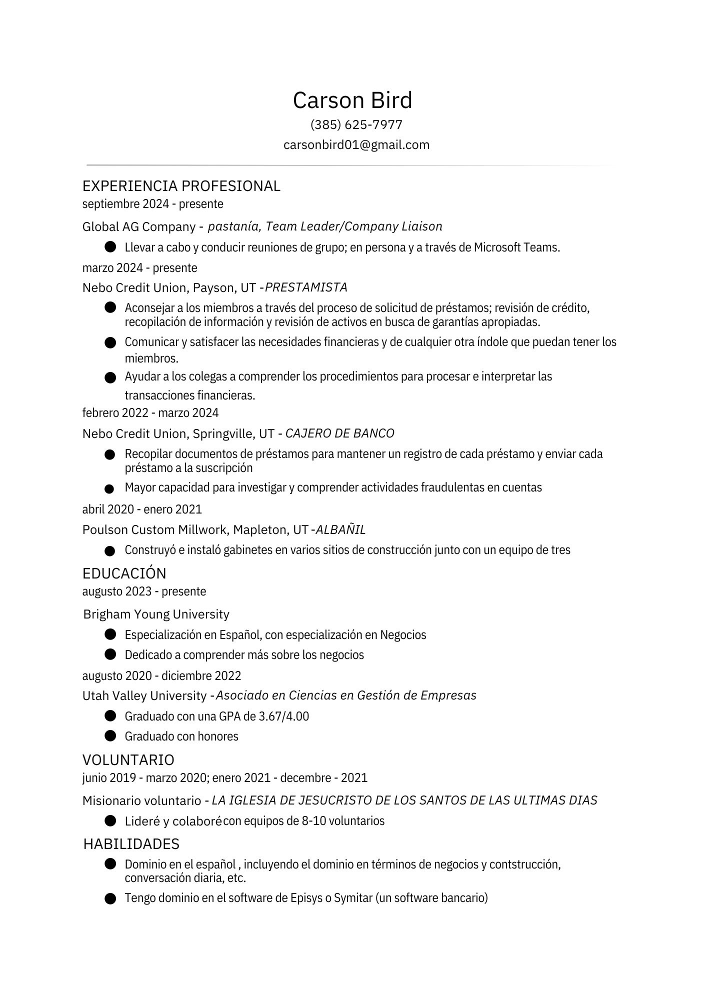

Critical Thinking and Expression
Argumentative Paper
Ensayo argumentivo
Research Paper
Ensayo de investigación
Reflection
Reflexión
While in school I have had to write several argumentative and informational essays, learning how to better express the facts and my opinion on a variety of topics. Getting the chance to take a Spanish Composition class here at BYU, was able to learn to do those same skills I had learned in school over the years, and I was able to learn to better learn how to give information with express my opinion in Spanish. These two types of writing styles have been great at helping me learn different terms and words about different subjects. For example, the topic I decided to write about both of my artifacts is the Cold War era and the political atmosphere of the world after World War II. When preparing my research for both essays, I had to learn various Spanish political terms and even terms for different events in history. Broadening my limited Spanish ability from a religious and business focused language terminology, to give me more ways to express myself on current events and past events.
Cultural Competence
Cultural Product
Producto cultural


Cultrual Practice
Prácticas culturales
Reflection
Reflexión
In the last half decade, of my life I had the opportunity to experience and learn about various cultural products and practices in the Hispanic World. I was able to serve as a missionary in El Salvador and in Latin American communities in central and northeastern Ohio; I also had the opportunity to go on a study abroad to Spain in my Junior year of college. Getting exposed to various cultures has allowed me to become more empathetic towards others of other cultures and attempt to understand others on a more personal level. On another level of culture learning more of the history of the culture, which has allowed me to learn more about why the culture has formed into what it is today has given me more depth of thinking of how events in the world and in my personal life affect my own culture and the cultures around me. The two artifacts I chose for this section have one that is focused on mental health in the world using the story “El Hijo” by Horacio Quiroga, which is based in Uruguay. The story demonstrates how mental health is approached by society. Covering the experiences of the protagonist in the story on how his life is affected by his mental health and how others interact with him I was able to show how it is a commentary on how mental health is addressed by cultures and what events can cause more mental health problems for a person. My other artifact covers how the history of different cultures in Spain has formed the current Spanish identity throughout the country. Focusing on how Jewish, Arabic, Roman and Celtic cultures have influenced different aspects of the culture. Going to Spain my junior year helped me see the different aspects from these cultures, in the architecture, language, music, etc. a true melting pot of several classical and post-classical cultures of Europe and northern Africa.
Connecting Learning to Life
Personal Use of Language
Uso personal del lenguaje
/1.PNG)
/2.PNG)
Professional Use of Language
Uso profesional del lenguaje

Reflection
Reflexión
I truly enjoy forming friendships and talking with people from all over. Learning about another’s culture, history, family, etc. each person has a story to tell, and I love to hear about it. Personal and professional relationships are both important since building bridges of connection between people helps each one of us to go further and improve our lives. That is why I have enjoyed building and maintaining my relationships with people from my time as a missionary, and with those I meet in a more professional setting. While I have been working at a credit union for the last few years, I have been able to expand and improve my language capabilities in a more professional setting. While connecting with others in these various settings it allows me to better grow and establish language skills.
Language Competence
Oral Proficiency Interview Certificate
Certificado de Entrevista de Competencia Oral


Adaptive Listening Test Certificate
Certificado de Prueba de Escucha Adaptativa

Written Proficiency Test Certificate
Certificado de Prueba de Competencia Escrita


Adaptive Reading Test Certificate
Certificado de Prueba de Lectura Adaptativa

Reflection
Reflexión
In this course being asked to take four Spanish assessment exams, it was humbling to receive a score on my own skill in the language in the areas of; speaking, listening, reading, and writing. In 2019 when I started to learn Spanish in an immersive setting, I felt that my strongest areas of Spanish were speaking and listening. However, after years of reading papers, blogs, messages, etc. and writing similar products I felt my skills in writing and reading were improved from where each was, but not at the same level as speaking or listening. When taking the four assessments and receiving my scores and finding that my top area was still speaking, but writing and reading were both tied for second place, and listening was my lowest of the four. Now, my language skills may not be on the same level as a native speaker, but I plan on practacing each aspect of the language as I continue through life.